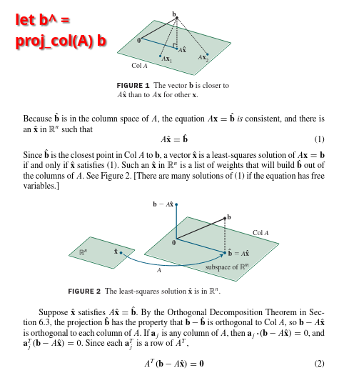
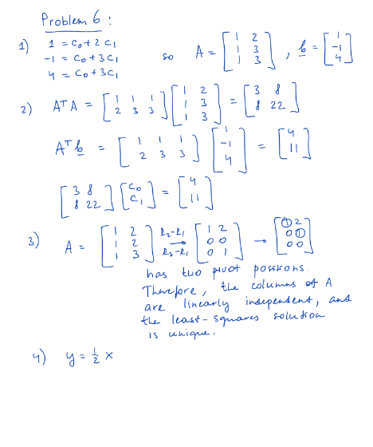

Understanding Least Squares: Problem 6
1. The Problem: Finding the "Line of Best Fit"
Often, we have a set of data points $(x_i, y_i)$ that don't perfectly lie on a straight line, but we want to find a line $y = c_0 + c_1x$ that best represents the trend in the data. This is the core idea of linear regression and the method of least squares.
For Problem 6, the given points are $(2,1)$, $(3,-1)$, and $(3,4)$. If these points were perfectly on a line $y = c_0 + c_1x$, they would satisfy:
$-1 = c_0 + 3c_1$
$4 = c_0 + 3c_1$
2. Setting up the Matrix Equation $A\mathbf{x} = \mathbf{b}$
We can write this system of equations in matrix form $A\mathbf{x} = \mathbf{b}$, where $\mathbf{x} = \begin{bmatrix} c_0 \\ c_1 \end{bmatrix}$ are the unknown coefficients of the line.
For our problem:
So we are trying to solve: $$\begin{bmatrix} 1 & 2 \\ 1 & 3 \\ 1 & 3 \end{bmatrix} \begin{bmatrix} c_0 \\ c_1 \end{bmatrix} = \begin{bmatrix} 1 \\ -1 \\ 4 \end{bmatrix}$$
However, these points are not collinear (e.g., the last two rows of $A$ involve the same $x$-coordinate $x=3$, but the target $y$-values $-1$ and $4$ are different). Thus, there is no exact solution $\mathbf{x}$ to $A\mathbf{x} = \mathbf{b}$. This means $\mathbf{b}$ is not in the column space of $A$, denoted $\text{Col}(A)$.
3. The "Least Squares" Idea: Minimizing Errors
Since we can't find an exact solution, we look for an approximate solution $\hat{\mathbf{x}}$ (read as "x-hat") such that $A\hat{\mathbf{x}}$ is as close as possible to $\mathbf{b}$.
The difference $\mathbf{e} = \mathbf{b} - A\hat{\mathbf{x}}$ is called the error vectorEach component $e_i = y_i - (\hat{c}_{0} + \hat{c}_{1}x_i)$ is the vertical distance from a data point $(x_i, y_i)$ to the fitted line.. We want to minimize the "size" of this error vector. The standard way is to minimize its squared Euclidean norm (length):
The vector $\hat{\mathbf{x}}$ that achieves this minimum is the least squares solution.
4. Geometric Intuition: Projections
The vector $A\hat{\mathbf{x}}$ is always in the column space of $A$, $\text{Col}(A)$. The vector in $\text{Col}(A)$ that is closest to $\mathbf{b}$ is the orthogonal projectionImagine $\text{Col}(A)$ as a plane. If $\mathbf{b}$ is outside this plane, its projection is the closest point on the plane to $\mathbf{b}$. of $\mathbf{b}$ onto $\text{Col}(A)$. Let's call this projection $\hat{\mathbf{b}}$. So, we set $A\hat{\mathbf{x}} = \hat{\mathbf{b}}$.

Geometric view: The vector $\mathbf{y}$ (our $\mathbf{b}$) is projected onto the subspace spanned by columns of $X$ (our $A$). The projection is $\mathbf{p}$ (our $\hat{\mathbf{b}}=A\hat{\mathbf{x}}$). The error vector $\mathbf{z}$ (our $\mathbf{e}$) is $\mathbf{y}-\mathbf{p}$ and is orthogonal to the subspace.
A key property is that the error vector $\mathbf{e} = \mathbf{b} - A\hat{\mathbf{x}}$ must be orthogonal to $\text{Col}(A)$. This means $\mathbf{e}$ is orthogonal to every column of $A$. If the columns of $A$ are $\mathbf{a}_1, \dots, \mathbf{a}_n$, then $\mathbf{a}_j^T \mathbf{e} = 0$ for all $j$. This can be written compactly as:
From the book:
5. The Normal Equations
Substituting $\mathbf{e} = \mathbf{b} - A\hat{\mathbf{x}}$ into $A^T \mathbf{e} = \mathbf{0}$, we get: $A^T (\mathbf{b} - A\hat{\mathbf{x}}) = \mathbf{0}$.
Distributing $A^T$ gives: $A^T \mathbf{b} - A^T A\hat{\mathbf{x}} = \mathbf{0}$.
Rearranging this yields the Normal Equations:
Solving this system gives us the least squares solution $\hat{\mathbf{x}} = \begin{bmatrix} \hat{c}_0 \\ \hat{c}_1 \end{bmatrix}$.
6. Solving Problem 6 (Following Your Solution Image)
Let's apply this to Problem 6. The data points are $(2,1)$, $(3,-1)$, and $(3,4)$.
(1) Give a matrix $A$ and a vector $\mathbf{b}$...
As established, for $y = c_0 + c_1x$ and points $(2,1), (3,-1), (3,4)$:
This matches step 1 in your solution image.
(2) Use $A$ and $\mathbf{b}$ ... to construct the normal equations...
We need to calculate $A^T A$ and $A^T \mathbf{b}$.
Click to see calculation of $A^T$
$$ A = \begin{bmatrix} 1 & 2 \\ 1 & 3 \\ 1 & 3 \end{bmatrix} \implies A^T = \begin{bmatrix} 1 & 1 & 1 \\ 2 & 3 & 3 \end{bmatrix} $$
Click to see calculation of $A^T A$
$$ A^T A = \begin{bmatrix} 1 & 1 & 1 \\ 2 & 3 & 3 \end{bmatrix} \begin{bmatrix} 1 & 2 \\ 1 & 3 \\ 1 & 3 \end{bmatrix} = \begin{bmatrix} (1\cdot1+1\cdot1+1\cdot1) & (1\cdot2+1\cdot3+1\cdot3) \\ (2\cdot1+3\cdot1+3\cdot1) & (2\cdot2+3\cdot3+3\cdot3) \end{bmatrix} $$
$$ = \begin{bmatrix} 1+1+1 & 2+3+3 \\ 2+3+3 & 4+9+9 \end{bmatrix} = \begin{bmatrix} 3 & 8 \\ 8 & 22 \end{bmatrix} $$
Click to see calculation of $A^T \mathbf{b}$
$$ A^T \mathbf{b} = \begin{bmatrix} 1 & 1 & 1 \\ 2 & 3 & 3 \end{bmatrix} \begin{bmatrix} 1 \\ -1 \\ 4 \end{bmatrix} = \begin{bmatrix} (1\cdot1+1\cdot(-1)+1\cdot4) \\ (2\cdot1+3\cdot(-1)+3\cdot4) \end{bmatrix} $$
$$ = \begin{bmatrix} 1-1+4 \\ 2-3+12 \end{bmatrix} = \begin{bmatrix} 4 \\ 11 \end{bmatrix} $$
So the normal equations $A^T A \hat{\mathbf{x}} = A^T \mathbf{b}$ are:
This matches step 2 in your solution image.
(3) Determine if the least-squares solution ... is unique.
The least squares solution $\hat{\mathbf{x}}$ is unique if and only if the matrix $A^T A$ is invertible. This is true if and only if the columns of $A$ are linearly independent.
To check this for $A = \begin{bmatrix} 1 & 2 \\ 1 & 3 \\ 1 & 3 \end{bmatrix}$, we can see if $A$ has a pivot in every column after row reduction.
Click to see row reduction of $A$ (as in your image)
There are pivot positions in both columns (column 1 and column 2). Since $A$ has 2 columns and 2 pivots, its columns are linearly independent.
Alternatively, we can check if $\det(A^T A) \neq 0$:
$$ \det \begin{pmatrix} 3 & 8 \\ 8 & 22 \end{pmatrix} = (3)(22) - (8)(8) = 66 - 64 = 2 $$
Since $2 \neq 0$, $A^T A$ is invertible, and the least-squares solution is unique. This matches step 3 in your solution image.
(4) A solution ... is given by $\mathbf{v} = \begin{bmatrix} 0 \\ 1/2 \end{bmatrix}$. Use this to write the equation of the least squares line.
We are given that the solution to $A^T A \hat{\mathbf{x}} = A^T \mathbf{b}$ is $\hat{\mathbf{x}} = \mathbf{v} = \begin{bmatrix} 0 \\ 1/2 \end{bmatrix}$.
Since $\hat{\mathbf{x}} = \begin{bmatrix} \hat{c}_0 \\ \hat{c}_1 \end{bmatrix}$, we have $\hat{c}_0 = 0$ and $\hat{c}_1 = 1/2$.
The equation of the least squares line $y = \hat{c}_0 + \hat{c}_1x$ is therefore:
This matches step 4 in your solution image.
7. Plot of Data and Line
(An interactive plot would show points (2,1), (3,-1), (3,4) and the line y=0.5x passing closely among them, with vertical lines indicating the errors.)
8. Your Solution Image (for reference)
Solution image (input_file_0.png).
